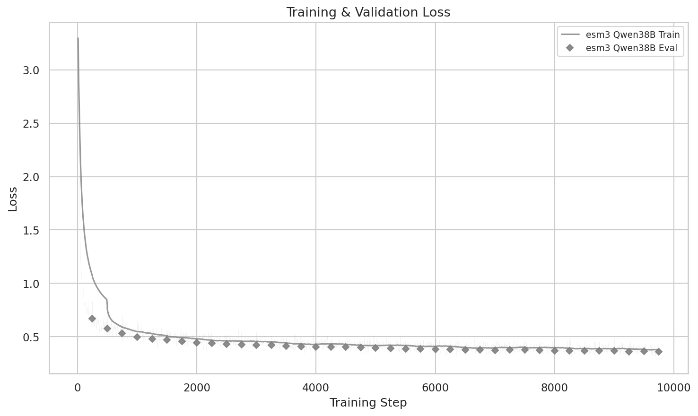
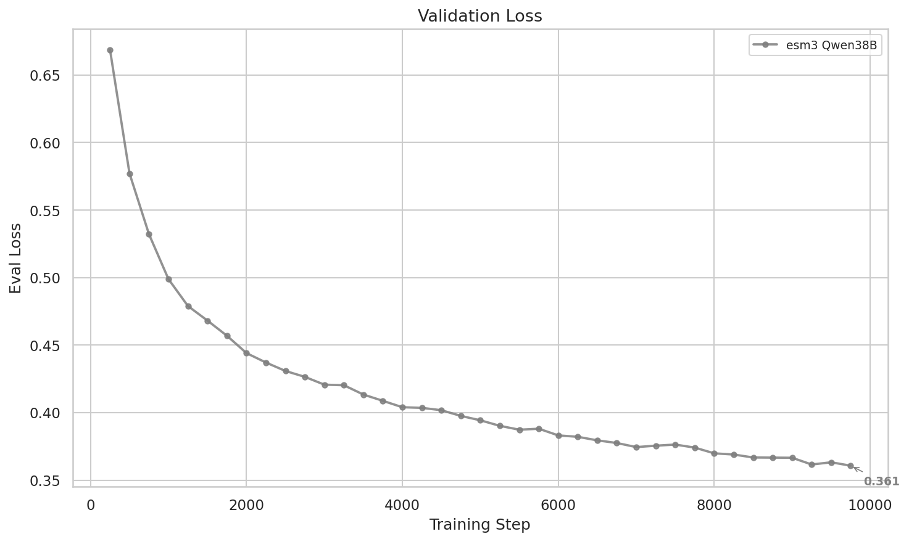
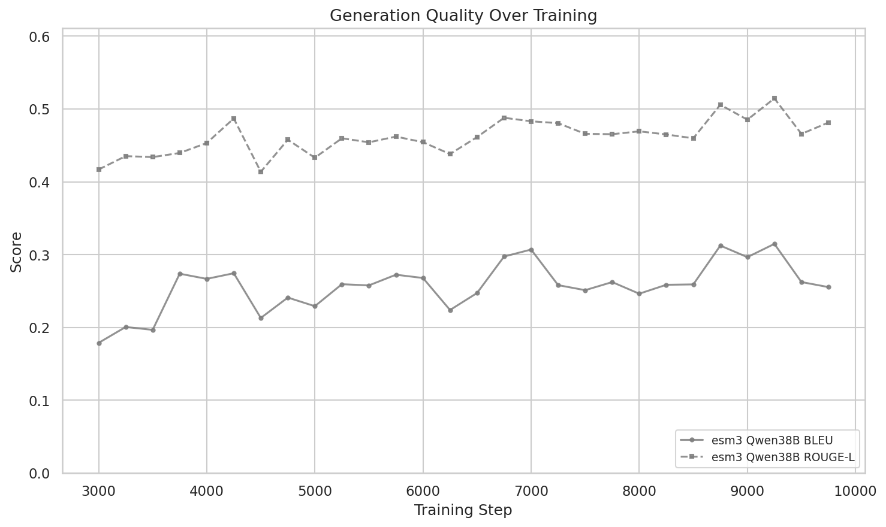
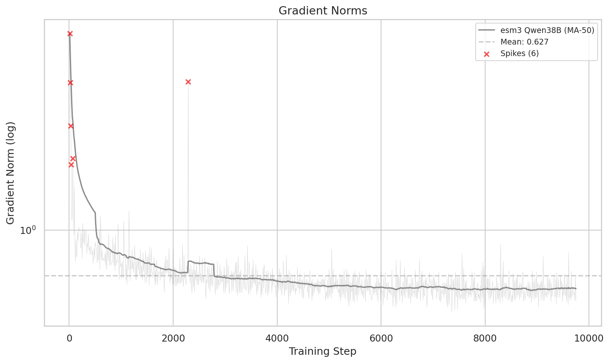
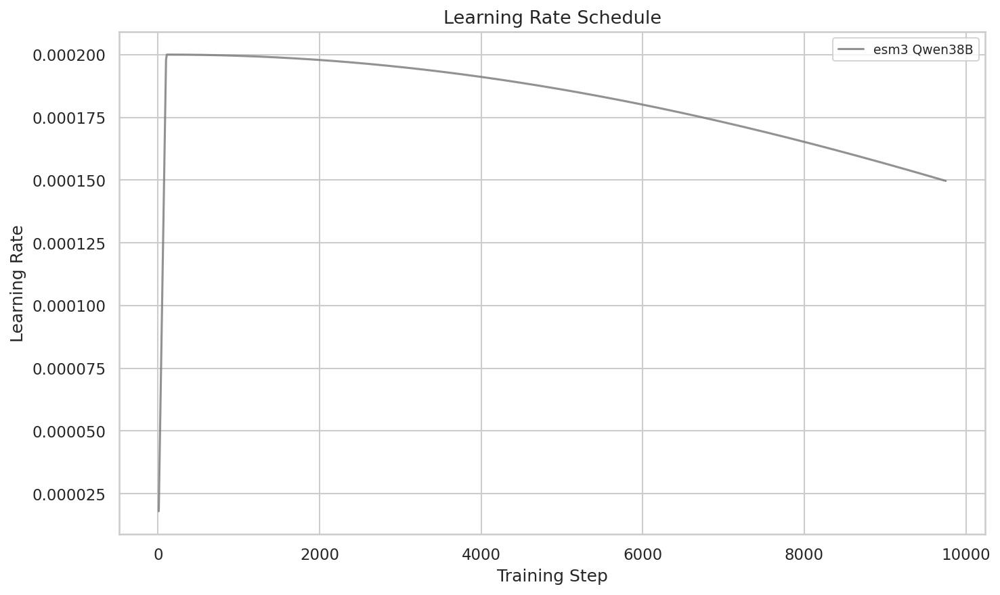
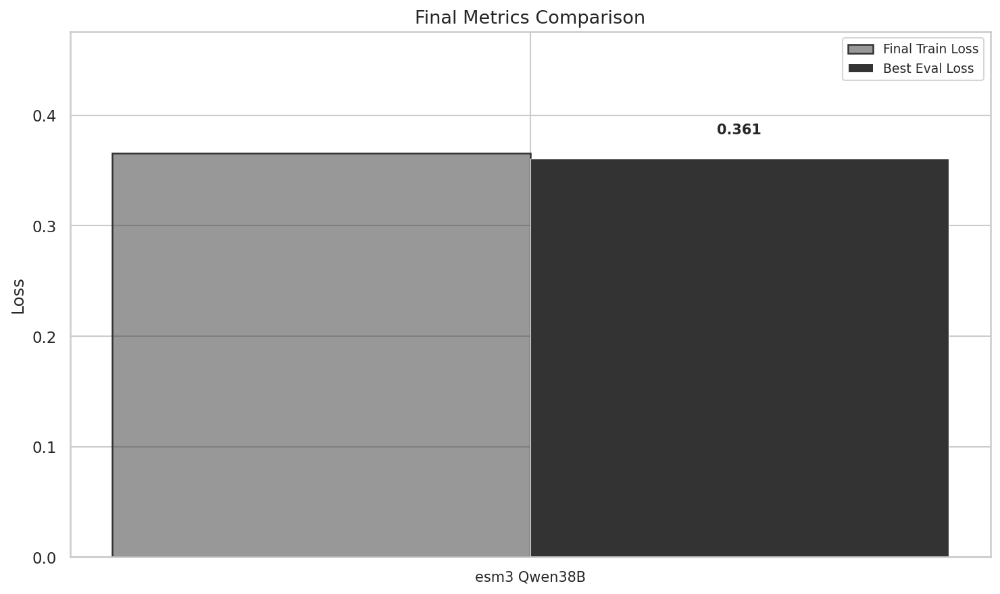
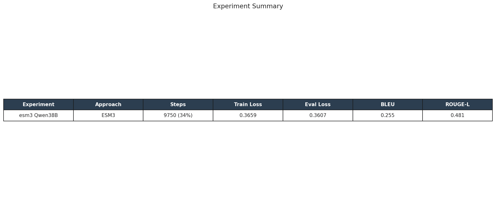

Question: What does the training trajectory look like as the main MLP-Combined run approaches the end of epoch 1, and is the model still improving?
Experiment: sft_esm3_mlp_combined_qwen3_8b_it_0306_010408
The main MLP-Combined run has reached step 9,750 of 28,941 (33.7% of 3 scheduled epochs), completing approximately epoch 1 of the 4.89M combined dataset. At this checkpoint: eval_loss = 0.361, token_avg_loss = 0.366, best BLEU = 0.315 (step 9,250), and best ROUGE-L = 0.515 (step 9,250). Both train and eval loss are still declining with no signs of plateauing. Training is stable with mean gradient norm 0.627 and all loss spikes confined to the warmup phase (steps 10–100). This represents a 90.1% reduction in eval_loss from the project's first run (3.640 → 0.361).
trainer_state.json (1,014 log entries)token_avg_loss (true per-token average; NOT HF Trainer running average)eval_loss (validation set, evaluated every 250 steps)GenerationSamplesCallback| Parameter | Value |
|---|---|
| Approach | ESM-3 + MLP projector |
| Base model | Qwen3-8B-Instruct-2507 |
| Encoder | ESM-3 small (frozen, 1536-dim) |
| Projector | MLP: 1536 → 5120 → 2560 (~21M params) |
| Pooling | AttentionPooling (32 tokens, ~9.5M params) |
| LoRA | r=8, all linear layers (~2M params) |
| Total trainable | ~32.5M params |
| Dataset | combined_sft_260225 (4.89M samples, 6 sources) |
| Learning rate | 2e-4 (LLM), 1e-3 (projector) |
| Scheduled epochs | 3 (28,941 total steps) |
| Current progress | 9,750 / 28,941 steps (33.7%) |
| Infrastructure | FSDP on 8×H100 80GB |
The combined train+eval loss curve shows continuous improvement across all 9,750 steps. After rapid convergence during warmup (steps 0–210), the model enters a steady descent phase. token_avg_loss dropped from 3.3 at step 1 to 0.366 at step 9,750, with a minimum of 0.306. Eval loss tracks closely at 0.361, indicating no overfitting.

The train-eval gap is remarkably small: 0.366 vs 0.361 (eval is actually lower than train). This suggests the model generalizes well to held-out data and has significant capacity for further improvement in epochs 2–3.

Eval loss improved monotonically after initial convergence:
| Step | eval_loss | Improvement from step 250 |
|---|---|---|
| 250 | 0.694 | baseline |
| 1,000 | 0.501 | 27.8% |
| 2,500 | 0.441 | 36.5% |
| 5,000 | 0.402 | 42.1% |
| 7,500 | 0.374 | 46.1% |
| 9,750 | 0.361 | 48.0% |
The rate of improvement is slowing (as expected with cosine LR decay) but has not flattened. Extrapolating the trajectory, we expect eval_loss in the 0.30–0.35 range by epoch 3 completion.

Generation quality metrics confirm that lower loss translates to better text outputs:
| Metric | Latest (step 9,750) | Best (step 9,250) |
|---|---|---|
| BLEU | 0.255 | 0.315 |
| ROUGE-L | 0.481 | 0.515 |
The slight dip from step 9,250 to 9,750 is within normal variance for generation metrics (which are evaluated on a small sample). The overall trend is upward, with BLEU improving from ~0.20 at step 3,000 to 0.315 at step 9,250 (58% gain).

The run is remarkably stable. Key stability metrics:
The single post-warmup anomaly (gradient spike at step 2,290) had no lasting impact on the loss trajectory. The custom _clip_multimodal_gradients() implementation is working as intended.


| Metric | Value |
|---|---|
| eval_loss (best) | 0.361 (step 9,750) |
| token_avg_loss (latest) | 0.366 |
| token_avg_loss (min) | 0.306 |
| BLEU (best) | 0.315 (step 9,250) |
| ROUGE-L (best) | 0.515 (step 9,250) |
| Convergence step | 210 |
| Mean gradient norm | 0.627 |
| Max gradient norm | 7.60 (warmup) |
| Training progress | 33.7% (9,750 / 28,941) |
| Anomalies | 16 total, all in warmup except 1 (step 2,290) |

This epoch 1 checkpoint represents the project's best result by a wide margin:
| Date | Run | Dataset | eval_loss | vs. Current |
|---|---|---|---|---|
| Feb 20 | MLP (Qwen3-4B, 50K) | Mol-Instr 50K | 3.640 | 10.1× higher |
| Feb 23 | MLP (Qwen3-8B, 50K) | Mol-Instr 50K | 1.942 | 5.4× higher |
| Feb 23 | Perceiver (Qwen3-8B, 50K) | Mol-Instr 50K | 1.952 | 5.4× higher |
| Feb 27 | Text-only (Qwen3-8B, 505K) | Mol-Instr 505K | 2.415 | 6.7× higher |
| Mar 7 | MLP-Combined (Qwen3-8B, 4.89M) | Combined 4.89M | 0.361 | — |
The two dominant scaling axes: model scale (4B → 8B: 47% eval_loss reduction) and data scale (50K → 4.89M: 81% reduction). Data diversity is the single largest contributor to performance.
Data: blog/data/03-07/ | Analysis: mlp_epoch1_analysis_summary.json | Previous: Scaling to 4.9M Analysis